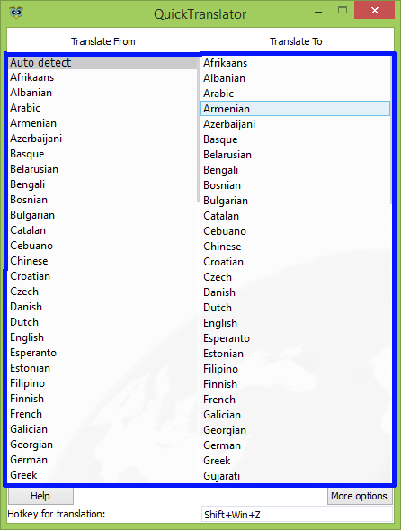
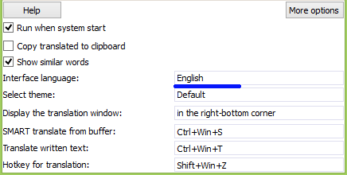

Basic information
Basic information
QuickTranslator - free app for quick and easy translation from a foreign language to the one you want. Its main features are:
The program is suitable for very fast translation of almost any text to translate it is possible not only with the browser, but also with all places that you can simply select. It will be very useful for students or people who need to translation large count of formatted text or text of tables because function «Smart translation» allows you to translate all this only by pressing the hotkey, without the need for translation table cells individually.
The program is controlled through the context menu of the application in the system tray, from where you can show or hide the main window and finish it completely.
 Capabilities
Capabilities
Quickly translate selected text
Features of the app is a very easy way in which even do not need to copy the desired text, it only need to select and press the key combination (default Shift+Win+Z), then you will get the result of selected text in the form of a small window with the translation.
By default, the translation of the selected or entered text if you translate a word or two, it showing a number of possible translations that can sometimes be a good help in the understanding of a word.
Translate manually written text

Also convenient is the translation function of your input text, for example for manual translation from the image. To access the text entry window has its own hotkey (default Ctrl+Win+T), which by the click displays a small window on the screen after writing required text the program will display it translation.

Perhaps the most useful feature is the function of "Smart translation", which by default is caused by hotkey Ctrl+Win+S, it allows to translate not only normal, but also formatted text that stores all your settings, such as text font, size, color, italics, bold, underline, and so on, which is very convenient and allows you to greatly accelerate its work, but it also allows you to translate and the whole table. For example, before you translation more than 100 cells in a table manually translated it one by one, you now need to copy the table and press the hotkey, and then will be translating each cell of the table, the result of translation will be saved to the clipboard and it can be simply "Paste".
 Settings
Settings
When the application run it window is displayed with the settings, to display all settings you need to click "More options." The app has the following settings:
Selecting of translation languages

Basic option allows you to select the language from wich you want to translate the text and the language on wich you want to translate the text. The program allows you to translate text from 90 languages. To select the language you want to double-click on it.
(Default from Auto translation into the language of the system)
It allows you to automatically start the application when the operating system starts. This option allows you to get rid of the constant self-run the application and allows it to always be ready for translation.
(Enabled by default)
When it enabled copy the translated text into the clipboard, it allows you not to copy it manualy with the translate window and increases speed when translation large amounts of text.
(Disabled by default)
Provides a showing of similar words for one or two translated words, some words have multiple meanings, so this feature is useful when you need to define the meaning of a word in a particular case.
(Enabled by default)
Interface language of application

As the name suggests it allows you to change the interface language, the default language of the system chosen, but if the program is not translated into your language, you can choose another who also understand.
(By default system language, by another English)
Selecting themes of the program
Allows you to select the desired theme of the program from the list, in the presence of white and dark themes, and also light theme, which is installed by default. In future their number will be increased.
(By default, an light theme)
Settings of window with the translation
This option lets you choose way to display translation, at the moment the program allows you to display the translation in the following ways:
(By default, displayed in the lower right corner)
Individual settings are hotkey settings for each translation mode. Now there are three modes of translation:
To change the keyboard shortcut you need to click on it displayed in the program and enter your combination. When hotkey is displayed of red color it necessary to change, it occurs when this hotkey is already occupied by another program or system.
(Default translate selected text: Shift+Win+Z)
(By default, the entered text translation: Ctrl+Win+T)
(By default, "Smart Translation: Ctrl+Win+S)
Author: Mihail Rozshko
Email: mihail.rozshko@gmail.com
Site: SovaSoft.zz.vc
Thank you for using this app! I hope it will bring you a lot of positive emotions and reduce many hours that you would have spent on the manual translation of the text and (or) documents.
I wish you a successful use!